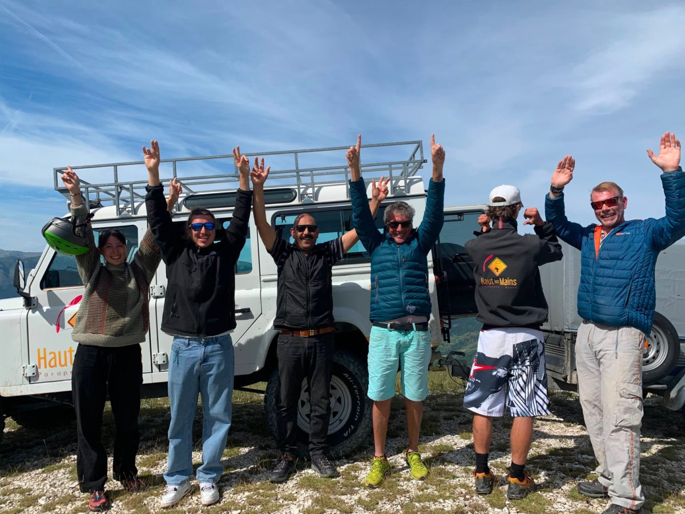

Divers Parapente

Le parapente est une activité de plein air encadrée par une réglementation précise en France. Que vous soyez débutant ou pilote confirmé, il est essentiel de maîtriser les règles qui régissent la pratique du vol libre pour voler en toute légalité et sécurité.
Cadre Législatif & Espace Aérien
En France, le parapente est considéré comme un aéronef au sens du Code de l'Aviation Civile (CAC). Son utilisation est soumise aux règles générales de la navigation aérienne définies par la Direction Générale de l'Aviation Civile (DGAC).
Espace Aérien
Le parapente évolue généralement en classe G (espace non contrôlé). Certaines zones interdites (CTR, ZRT, RTBA) doivent impérativement être évitées. Consultez la carte aéronautique OACI avant tout vol.
Zones Réglementées
Les zones P (Prohibited), R (Restricted) et D (Danger) sont publiées dans le SIA (Service de l'Information Aéronautique). L'application SkyDemon ou XCTrack permet de les visualiser en temps réel.
Horaires Légaux
En dehors des sites agréés, le vol en parapente est autorisé de jour uniquement. Certains sites spécifiques disposent d'autorisations de vol de nuit, sous conditions strictes.
Équipements & Homologation
Tout équipement de parapente doit être homologué selon les normes européennes EN 926 (voile) et EN 1651 (sellette). Ces certifications garantissent un niveau de sécurité défini et une comportement prévisible de l'aile lors d'incidents de vol.
Niveaux de Certification EN
- EN A : Voiles très stables, idéales pour les débutants et l'apprentissage en école
- EN B : Polyvalentes, pour pilotes réguliers avec bonne expérience
- EN C : Performances élevées, réservées aux pilotes expérimentés et XC
- EN D : Compétition et vol de distance, exige d'excellents réflexes de pilotage actif
- CCC : Compétition pure, réservées aux professionnels de la Coupe du Monde
La sellette doit également être homologuée. Elle intègre dans la grande majorité des cas un airbag ou un foam de protection dorsale. Le port du casque homologué EN 966 est fortement recommandé et obligatoire dans le cadre des stages en école.
Assurance & Responsabilité
La souscription à une assurance responsabilité civile est obligatoire pour pratiquer le parapente en France. Elle couvre les dommages que vous pourriez causer à des tiers lors d'un vol.
FFVL (Fédération)
La licence FFVL inclut automatiquement une RC et une assurance accidents corporels. Elle donne également accès aux sites agréés fédéraux et aux compétitions officielles.
Assurances Privées
Des compagnies spécialisées (Assur'Vol, XL Assurance, etc.) proposent des couvertures étendues incluant le rapatriement, les dommages au matériel et le Vol à l'étranger.
Règles de Sécurité Essentielles
La sécurité en parapente repose sur le respect de règles fondamentales qui s'appliquent à chaque vol, quel que soit votre niveau :